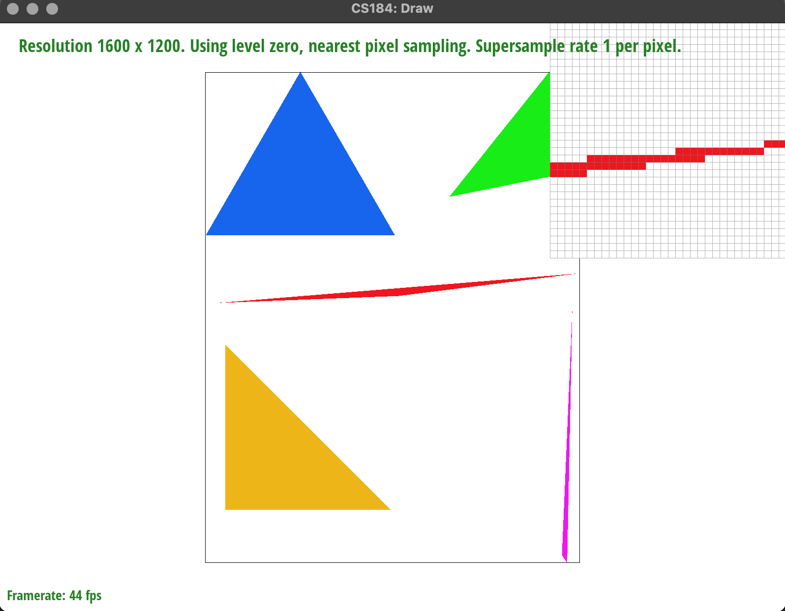

Overview
Hello everyone! In this project, Prannay and myself, Shaamer, built a rasterizer!! Each task pretty much built upon the previous one. We started off with simply rasterising a triangle, then added supersampling techniques, then transformation functions, then texture mapping, and finally level sampling for textures! We learned a lot together on this project, like the pros/cons of using either nearest neighbor sampling versus bilinear sampling, how supersampling improves the quailty of a rasterization, but increases the complexity too, and how barycentric coordinates can give an image's gradient just from having three multicolored points!!!
Section I: Rasterization
Part 1: Rasterizing single-color triangles
The basic concept of rasterize_triangles is that we want to determine whether each point we check is bounded by the lines of our triangle so we can color them in (and we only want to check points that are bounded by parts of our triangle dimension so we don't do unncessary computation). In order to check whether our points are bounded inside the sides of our triangle, we find the normal to each side, and find the dot product of this normal with a cooresponding vector between an endpoint of the given triangle side and the given point we want to check. We do this for every point we check, between the normals for all 3 sides. If all 3 dot products are positive for all 3 of our sides with the vector of this particular point, then our point lies inside the triangle lines and we can color it (if the dot product for a particular side is 0, the point lands on that line). The equation we use to check whether point (x,y) is bounded by sample side with points (x0, y0) and (y1, y1) is -(x - x0)*(y1-y0) + (y-y0)*(x1-x0) > 0. Our algorithm is no worse than checking each sample within the bounding box of the triangle, as used a nested "for loop" to loop over only the points that were within the smallest and largest x and y coordinates. Thus, we only checked possible combinations of points that had an x or y value that fit within the "bounding box of the triangle". Initially, we tried to rasterize by finding overlapping/close points, without triangles, but we ran into a completixy issue, so we changed our approach!
One issue we had came with test6, as it included winding patterns that caused our normals to face the wrong way for certain triangles in the image. As a result, we added another check for these different facing normals, and checked whether all our dot products for each respective sides we negative.
Note, in the images below there are jagged edges. This will change in part 2 with a different sample rate
|

|
|
Part 2: Antialiasing triangles
Supersampling is a way to remove aliasing from computer graphics. In our case this is mainly used to smooth out jagged and pixelated edges from our images. This is done by furthur dividing each pixel into subsamples of smaller squares. For each of our supersampled pixels, we preformed the steps to check whether each supersampled subpixel was inside our triangle, then averaged the color of these supersampled pixels to find the color value of the overall pixel. We did this in code by looping through our sample_rate for each pixel (which has sample_rate * sample_rate subpixels), calling the function to check whether the subpixel is in the triangle, adding each pixel color to a sample_buffer array using the modified fill_pixel() function, then averaging the subpixel colors to find the overall pixel color in the resolve_to_framebuffer() method. We had to expand the index of our sample_buffer array to include the colors of every subpixel in our fill_pixel method (of which there are sample_rate * sample_rate times more colors to keep in memory). An issue we ran into while attempting this was that we didnt have correct bounds for averaging, so we kept running into an out of bounds error, but once we found that issue, we were good to go.
|
|
|
|
The screenshots above show that supersampling with a higher sample rate resulted in less jagged edge colorings of our red triangle. We also see less instances of white gaps in our image. This is because we are averaging the colors of our pixels from many subpixels, which lead to the color seeming more natural and smooth along edges.
Part 3: Transforms
This section was quite simple for us to implement. We simply went into the transform.cpp file and edited the functions as seen in lecture. We initally ran into issues trying to figure out what to initialize and how to do it, but it was pretty quick to do that./p>
This is the robot waving! We decided to change the colors of all of cubeman's body parts to pink: #FFC0CB. To get cubeman to wave, we kept everything same except his arms. For his right arm, we rotated the entire section by 20 degrees, then translated it -110, -20 so that it was in a position closer to the torso. I then went into the outer section of his arm, and rotated it further by 60 degrees, and translated it in a similar manner to be in a realistic position. For the left arm, we simply rotated and shifted the arm to give a "waving" look.
Section II: Sampling
Part 4: Barycentric coordinates
Barycentric coordinates are ways to easily define points in relation to the shape of a geometric figure. In a triangle, like the figure below, barycentric coordinates are represented in the form (x,y) = alpha * A + beta * B + gamma * C, where A, B, and C can represent positions, texture coordinates, color, etc. Barycentric coordinates are useful, as they allow us to interpolate values across a shape, thus leading to smoother values of texture, color, etc. We calculate these coordinates by calculating alpha, beta, and gamma values using the specified line equations from lecture.
As we can see above, we have the barycentric triangle, and the desired test7 of the circle. In the triangle, we had three vertices of different colors, and using barycentric coordinates, we interpolated and smoothed the color, causing the beautiful gradient!
Part 5: "Pixel sampling" for texture mapping
ixel sampling is a technique used to reduce aliasing in images by finding the color of a pixel, whether a pixel is within a shape, whether a pixel is in another pixel, etc. For our purposes, we used bilinear pixel sampling to smoothen the image and help us out! Before we go into that let me explain the two sampling methods. To do this, we converted the 3D vector into 2D, so we could get the data in a digestible format, and sampled from there! For each pixel value, we determined our pixel color using the the closest color for the nearest technique, and averaged closest 4 pixels for bilinear sampling. The issues we ran into for this problem were more conceptual, however, once we both looked over the slides and lectures, we were very comfortable and dove right in.
Nearest Sampling: Uses the color closest to the pixel being rendered.
Bilinear Sampling: Uses the colors of the 4 closest texels to the pixel being rendered.
The different between the two is kind of like 1-nearest neighbor vs 15 nearest neighbors. We will get a much smoother output and overall more "realistic" one if we average out the pixels around us to get a smoother image. Nearest sampling will likely produced more jagged edges, as we only use 1 other pixel to determine our pixel color, instead of averaging data from more surrounding pixels. This is why we chose to use bilinear sampling. With this being said, however, the greater data used by bilinear sampling also continues to it being slower and costing more memory.
|
|
|
|
|
As we can slightly see above, Bilinear sampling offers very slightly less-blocky information on the photos. If we look closely at the lowest sampling rates i.e bilinear 1 and nearest 1, the zoomed in photo shows that bilinear 1 is actually smoother and less jaggedy than nearest1! Even for the supersampled versions, the supersampled bilinear appears to be more smooth and blurred rather than the slightly ore jaggedy nearest. This speaks to when bilinear is more useful, and I think its more useful when there are more complex images with high changes in frequency (lots of details). Nearest would make the high frequencies look jaggedy, whereas bilinear would make it look as realistic as possible
Part 6: "Level sampling" with mipmaps for texture mapping
Level sampling is a computer graphics technique to inprove the quality, visuals, and preformance of texture mapping for texture minification. Level sampling deals with downsampling texture files recursively, which allows us to adjust textures when mapping to a texture image. We implemented level sampling for texture mapping in code using mipmaps, which are essentially smaller layers of texture with each level being a downsampled version of the previous level. Our goal is to find the mipmap level that reduces aliasing, and this level is found in our code in 3 different ways. For one, the L_ZERO condition in our code samples from a level-0 mipmap level, while the L_NEAREST condition samples from the nearest mipmap level (round(level)), and the L_LINEAR condition that treats the mipmap level as a continuous number. After satisfying one of these conditions, we can preform either nearest or bilinear pixel sampling for texture mapping from part 5. The algorithm we implemented calculates the barycentric coordinates for (x, y), (x+1, y), and (x, y+1), then calculates the minimap level in our get_level function through the equations shown in lecture.
Overall, there are various tradeoffs in speed, memory usage, and antialiasing power between the techniques of pixel sampling, level sampling, and supersampling. Supersampling is a good technique to use for antialiasing, as it allows you to use more data per pixel to smooth edges and fill in any gaps between pixels. Because of this increase in data used per pixel however, supersampling is relatively expensive and slow to run. Pixel sampling allows us to blend aspects of neighboring pixels to reduce antialiasing. Pixel sampling is generally faster than supersampling, though it often isn't as effective at anti-aliasing. Additionally, switching between nearest and bilinear pixel sampling comes with tradeoff of memory and speed for better visual quality. Finally, level sampling is a faster, less memory intensive process than supersampling, though it can come with blurring at smaller mipmap levels and be less effective at anti-aliasing. Pixel sampling can be more effective than level sampling for visual quality, though this likely comes with memory tradeoffs as well, as these methods (like bilinear sampling) would require multiple samples to be stored per pixel.
|
|
|

|
|
The above images show combinations of pixel and level sampling techniques to add texture to an image of mario. We used this image as we thought it would best visually exemplify the effects that each of these anti aliasing techniques had on our image.